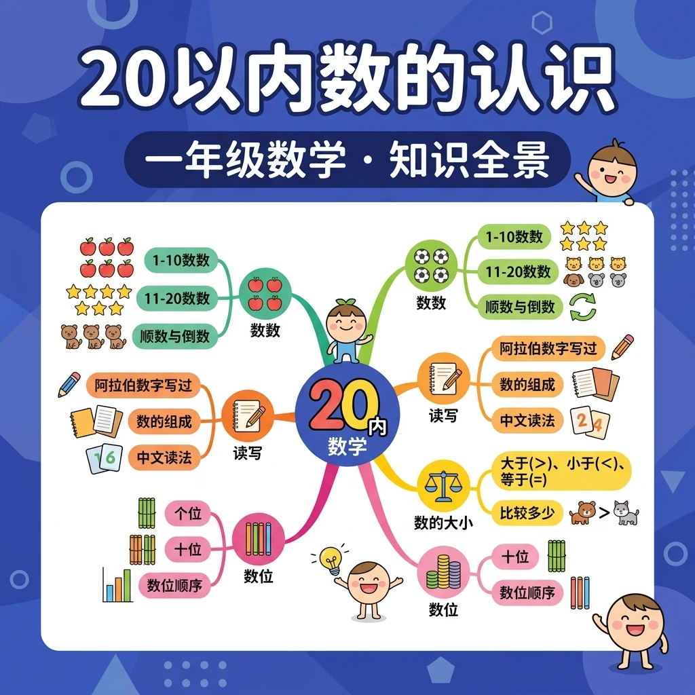
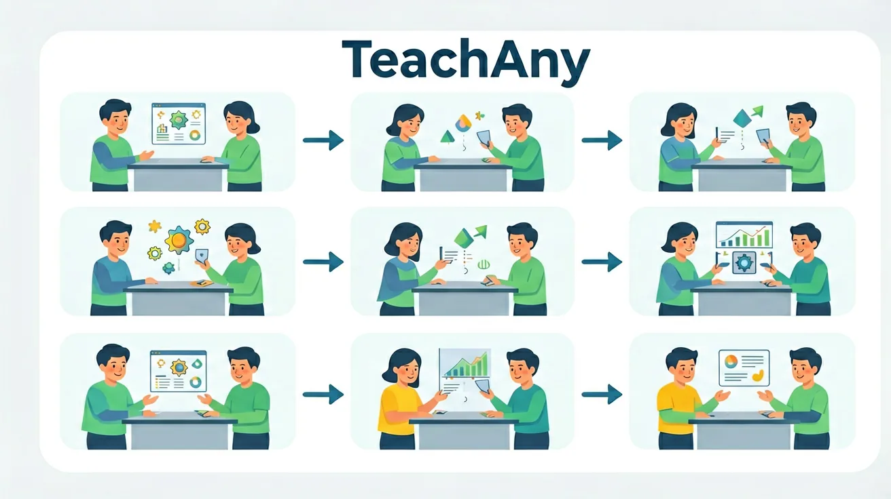

❓ 为什么9比10小却排在10前面？
❓ 15和18中间隔着几个数？用手指怎么数？
❓ 妈妈买了12个苹果，吃掉3个，篮子里还有几个？
学完这一课，这些问题你都能自信地回答。
🎯 能说出20以内数的顺序并正确排列
🎯 能判断两个20以内数的大小关系
🎯 能计算20以内数的加减法应用题
👆 点击苹果树，摘苹果！数一数篮子里有几个苹果。
🌍 And（已知）：你已经掌握了一些基础知识
⚡ But（问题）：遇到更复杂的情况还不够用
💡 Therefore（新知）：学习今天的内容，让能力更完整、更系统
在学习新内容之前，先测测你的基础知识！
Q1：10以内最大的数是？
Q2：10和3合起来是多少？
数数时要按顺序，从1开始，不重复、不遗漏。
11~20的数由1个十和若干个一组成。
用 >（大于）和 <（小于）比较。
每个数都有前后相邻的数（前驱和后继）。
利用10来简化加减运算，是重要的运算策略。
| 数字 | 1 | 2 | 3 | 4 | 5 | 6 | 7 | 8 | 9 | 10 |
|---|---|---|---|---|---|---|---|---|---|---|
| 汉字 | 一 | 二 | 三 | 四 | 五 | 六 | 七 | 八 | 九 | 十 |
| 数字 | 11 | 12 | 13 | 14 | 15 | 16 | 17 | 18 | 19 | 20 |
| 汉字 | 十一 | 十二 | 十三 | 十四 | 十五 | 十六 | 十七 | 十八 | 十九 | 二十 |
拖动红色滑块，观察数在数轴上的位置。
点击方块，选择后下方显示数量。
选择要分解的数（11~20）：
你已经掌握了20以内数的认识！
完成学习后，用这两道题检验你的掌握程度！
Q1：15是几个十和几个一？
Q2：从11到20共有几个数？
记忆口诀：十一、十二、十三……记住"十"加"几"就是"十几"！助记：用小棒帮助记忆，1捆（10根）加散的几根=十几。口诀：一捆加零头，就是十几数；满了二十，就用2个十来表示。
从记忆→理解→应用→分析，逐步深化你的理解！
📌 记忆层（识别）：选出下面哪个是20以内数的认识的正确说法：
解释：为什么11到19都叫"十几"？
🔍 理解层（解释）：用自己的话解释概念，并比较区别
比较：15和12哪个大？
⚡ 分析层（判断）：判断以下说法是否正确，并说明理由
判断：20是1个十还是2个十？
💡 背后的原理
🔍 本质：11-20体现了"十进制进位"——满10进1位。这是人类选择十进制的体现（可能因为我们有10根手指）。1捆（10根）加散的几根，形象地展示了十位和个位。
理解数的顺序是掌握大小比较的关键。在数轴上，右边的数字总是比左边的大。例如：18比15大，因为18在15的右边。我们可以通过实物比较来理解：18颗糖果比15颗多，12厘米的绳子比9厘米长。比较符号'>''<'的使用要特别注意开口方向：大口朝向较大的数。生活实例：比较两个班级的人数（17人vs20人），比较两本书的页数（156页vs143页）。
1. 你能从1数到20吗？2. 比较这两个数字：13和17，哪个更大？3. 你能用积木表示出数字16吗？
1. 请按顺序写出15到20的数字。2. 比较19和14的大小，用>或<表示。3. 把数字18分解成两个数相加，你能想到几种方法？
常见误区：1. 数字认读混淆，如把'12'读成'二十'（错因：不理解位值）。2. 比较大小只看数字位数（误区：认为15比8大因为15有两位数，但实际应与20以内所有数比较）。诊断方法：通过实物操作和数轴演示纠正错误认知。
迁移挑战：设计一个超市购物情境，要求用20元购买至少三种商品（单价均为20以内整数），列出所有可能的购买组合，并分析哪种组合最划算。
先独立作答，再点选项查看对错与错因。
小美有13颗糖，吃掉5颗后还剩多少颗？
哪个数字在15和17中间？
8+9等于多少？
12比9多____
答案：3
12-9=3
____ + 6 = 14
答案：8
14-6=8
关于数字18的正确说法是？
观察教室里的物品数量
✅ 强调十位数优先比较
💡 机械比较个位数
✅ 用小棒演示借位过程
💡 未建立减法顺序概念
And：学生已会数1-10
But：超过10的数容易漏数或重复
Therefore：建立11-20的完整数感
像搭积木一样，10是地基，往上加1块就是11（10+1），加2块就是12（10+2）。比如数小棒：先捆好10根当'十位'，旁边放3根单独小棒就是'13'。记住15以后是16，不是'十十'哦！
🌍 电梯按钮：1楼到10楼大家都认识，11楼（显示11）就是10楼再上一层。停车场车位编号15号，就是10号区第5个位置。
数一数：从12开始接着数3个数是？
And：知道13比10大
But：不理解13=10+3的关系
Therefore：用具体物品理解数的结构
每个数都能拆成'十'和'个'两部分，就像硬币有元和角。例如17可以换成1个10元硬币和7个1角硬币（10+7）。用小圆片演示：左边摆10个蓝色片（十位），右边摆5个红色片（个位），合起来就是15。
🌍 买文具：1个10元的笔记本+3元的橡皮=13元。妈妈给了1张10元和4个1元硬币，一共14元。
18由什么组成？
And：会比较1-10的大小
But：遇到12和20容易看错位数
Therefore：掌握两位数比较规则
比较两位数就像比身高：先看十位数（高个子），十位大的数就大。比如15和18比，十位都是1'身高'一样，再看个位5＜8，所以15＜18。特殊例子：20比19大，因为十位2＞1，哪怕个位是0。
🌍 运动会号码牌：8号（个位数）和15号（两位数）比较，15号选手编号更大。书包价格19元和20元，20元的更贵。
哪个数最大？
And：能正数1-20
But：倒数或找中间数困难
Therefore：培养灵活数序能力
数轴像楼梯：从11到20每格代表1步。找中间数就像找楼梯中间平台，比如13和17之间的数是14、15、16（掰手指验证）。倒数时要特别注意：18前一个是17，不是19！练习：从16倒着数到11。
🌍 日历翻页：17号第二天是18号，前一天是16号。公交站牌：现在是第14站，下一站是15站。
19前面的第2个数是？

